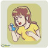

Imp: Asthma Attack
Diet: NPO
Activity: CBR
Condition: Urgent
Please:
1.Iv line fixed
2.POM & COM
3.O2 Therapy with mask 4-6 lit/min
4.CBC diff BUN ,Cr ,Na ,k ,Bs , VBG
5.CXR
6.ECG
7.Spry Salbutamol 4-6 puff q20min x 3
8.Spry Atrovent 4-6 puff q20min x 3
Or Amp Duolin nebulized
Or Amp Pulmicort nebulized
9.Amp Hydrocortisone 200-300mg stat
Or Amp methylprednisolone 40-60mg stat IM
Or Tab prednisolone 50mg po stat
10.Amp pentazole 40mg stat
IF need:
11.Amp Epinephrine(1/1000) 0.3-0.5mg IM up to3
12.Amp MgSo4 1-2gr infusion over20min
13.Amp Aminophylline 250mg infusion
14.intubatin
15.Amp Ceftriaxone 1gr stat and bid
16.Cap Azithromycin 500 stat and daily
17.ICU admit
شرح حال: بیمار به دنبال ورزش، هوای سرد، استنشاق آلرژن ها، یا عفونت ویروسی سیستم تنفسی ، مصرف NSAID, ، بتابلوکرها دچار حمله آسم با علائم ویزینگ، سرفه، تنگی نفس، میشود. گاهی عدم وجود تاکی پنه همراه با PCO2 نرمال به علت خستگی عضلات تنفسی است که نشانهی خوبی نیست.
DDX : COPD، CHF, Croup, Bronchitis, Foreign body
نکته: ابتدا از نظر شدت علائم بیمار ارزیابی کنید. و تا بهبودی کامل علائم بیمار پایش کنید.
نکته: درخواست ECG ,COM در بیماران با سابقه قلبی، مسن و فرم شدید بیماری مدنظر داشته باشید
نکته: آزمایشات ضروری نیست و با توجه به بالین بیمار درخواست بدید.
نکته: درخواست CXR در بیماران فرم شدید ، شک به عفونت یا شک به سایر تشخیص ها(پنوموتوراکس،پنومونی و...) مدنظر داشته باشید.
نکته: تجویز آنتی بیوتیک در صورت شک به عفونت
نکته: درصورت عدم کنترل میتونید از اپی نفرین عضلانی ،منیزیم سولفات و آمینوفیلین استفاده کنید.
نکته: دربیماران Respiratory Failure اینتوباسیون مدنظر داشته باشید.
✳️ سرفه
✳️ تنگی نفس
✳️ Chest tightness
✳️ Wheezing
✳️ Shortness of breath
تشخیص افتراقی بر اساس علائم آسم
ویز
vocal cord dysfunction 1️⃣
2️⃣ bronchogenic carcinoma
3️⃣ foreign body aspiration(focal, monophonic wheeze)
سرفه
rhinitis or rhinosinusitis 1️⃣
GERD 2️⃣
post-viral cough 3️⃣
eosinophilic bronchitis 4️⃣
cough induced by ACEI 5️⃣
pertussis ("whooping cough") 6️⃣
7️⃣ سرفه پروداکتیو مزمن ناشی از سیگار
تنگی نفس
COPD 1️⃣
heart failure 2️⃣
pulmonary embolism 3️⃣
sarcoidosis 4️⃣
obesity 5️⃣
تشخیص افتراقی آسم بر اساس سن
جوانی و ابتدای میان سالی:
recurrent bouts of bronchitis 1️⃣
bronchiolitis 2️⃣
bronchiectasis 3️⃣
paradoxical vocal cord motion 4️⃣
pulmonary embolism 5️⃣
GERD 6️⃣
panic disorder 7️⃣
sarcoidosis 8️⃣
مسن :
COPD 1️⃣
left-ventricular heart failure 2️⃣
sarcoidosis 3️⃣
tumors involving central airways 4️⃣
recurrent oropharyngeal aspiration 5️⃣
تصویری برای این نسخه موجود نیست.